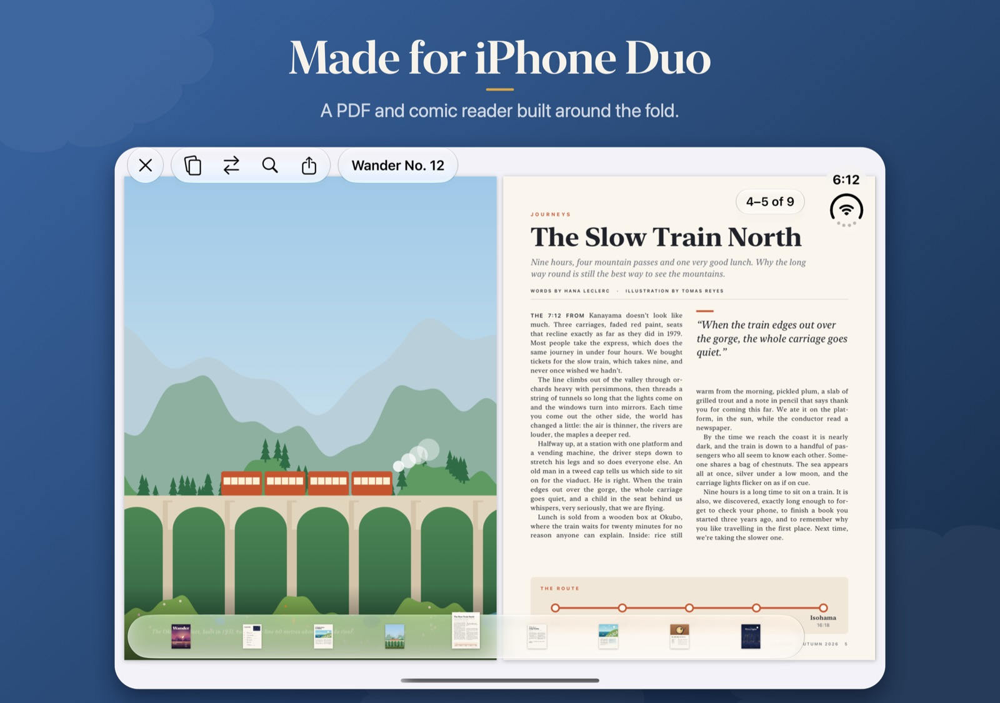
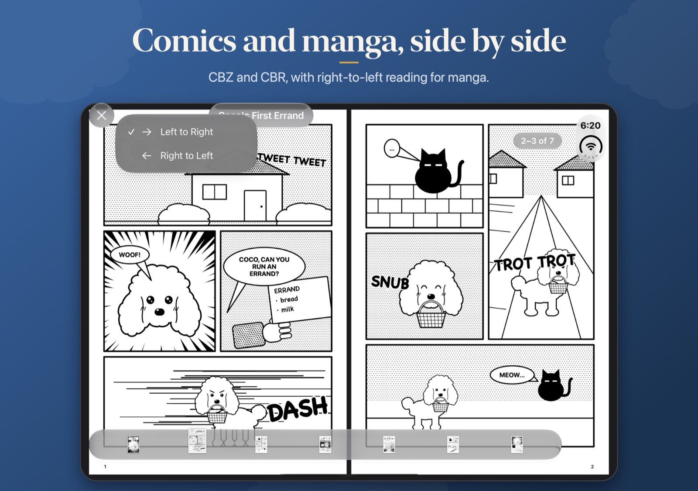
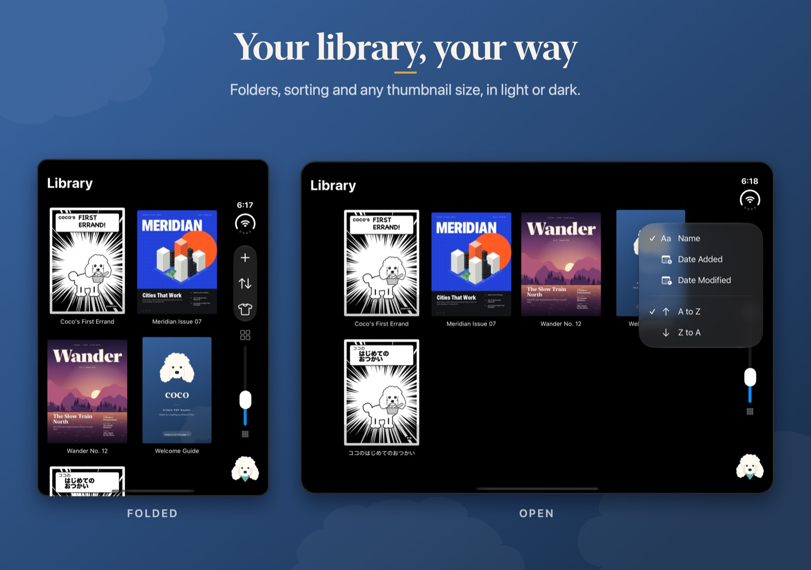

Reads the way you hold it
Coco is built around the fold, so every way you hold iPhone Duo is a way to read.
Open like a book
Unfolded, magazines and comics sit side by side as real two-page spreads.
Fold and keep going
Folded, carry on one page at a time on the outer screen.
Half folded
Hold it like a book and the pages meet at the crease.
Vanity Mode
Show your cover on the outer screen while you read inside.
See it in action
Swipe through. All the magazines and comics shown are original samples made for Coco.



PDFs and comics
Everything you need to read, and nothing you don't.
PDF, CBZ and CBR
Documents, magazines and comic archives, all in one library.
Search
Find any word in a PDF with a text layer.
Pin a page
Keep a page in view for reference while you read on.
Manga, right to left
Turn pages the way manga is meant to be read.
Slide or page curl
Pick your page turn, with a page strip for quick jumps.
Your files, your folders
Import files or whole folders. Everything stays in the Files app.
Meet Coco
Coco the poodle keeps you company in your library, with something different to do at every time of day.
Reading is free, always: no accounts, no sign-ups, no subscriptions, no ads. If you enjoy the app, you can show your support with extra outfits and color themes for Coco, each a one-time purchase.
Support
Answers to common questions.
How do I add documents?
Tap + in the Library to import PDFs, CBZ and CBR files, or a whole folder. You can also open a file in Coco from another app's share sheet, or add files to On My iPhone › Coco in the Files app.
Search doesn't find anything in my PDF.
Search needs a PDF with a text layer. Scanned PDFs are pictures of pages, so there's no text to find. Comics aren't searchable for the same reason.
How do I read manga right to left?
Open the comic, tap the arrows button in the toolbar, and choose Right to Left. Coco remembers it for that document.
Why does Vanity Mode ask for the camera?
iOS only lets an app use the outer screen while the phone is open when the camera is active. Coco keeps the camera running for that reason only: nothing is recorded, saved or sent anywhere.
How do I restore my purchases?
Tap the shirt button in the Library, choose More Outfits & Themes, then Restore Purchases. Purchases are shared with your family through Family Sharing.